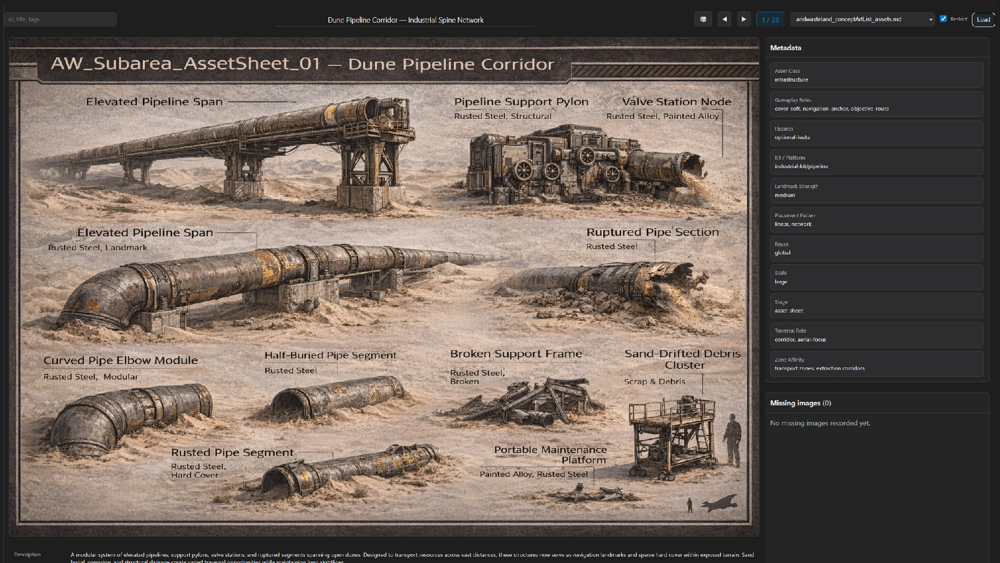

Asset Viewer (Part 1): Zero-Install Asset Management for Large Projects
Large creative projects accumulate assets faster than they accumulate organization. Concept art, reference images, variants, drafts — all buried in deep folder trees that make simple browsing painfully slow.
At some point, finding a specific asset becomes harder than creating a new one.
Asset Viewer was built to solve that problem without introducing new infrastructure, databases, or maintenance overhead.
 Asset Viewer baseline layout: search on the left, focused content in the center, and control options on the right.The Real Constraint
The goal was not to build a feature-rich asset management system. It was to build something that could be used immediately, locally, and safely.
Key requirements:
- Zero installation
- No database
- No duplication of files
- Works offline
- Uses existing project structure
- No changes to asset naming or layout
Most conventional solutions violate at least one of these.
Why Existing Solutions Fail Here
Typical approaches introduce hidden costs:
- Export pipelines that duplicate data and must stay in sync
- Asset management software that adds setup time and workflow friction
- Custom scripts that require environments, packages, and maintenance
All of them move the project away from a simple source of truth.
Zero-Install as a Design Principle
Instead of adapting the project to the tool, the tool adapts to the project.
Zero-install means: open a local HTML file and the tool runs. No services, servers, or build steps. No persistent state beyond the files themselves. No risk of corrupting project data.
This drastically lowers the barrier to use. If a tool is frictionless, it actually gets used.
Leveraging What Already Exists
Most projects already contain structured information — just not in a machine-friendly format.
In this case, asset descriptions were stored in Markdown files. Rather than exporting that data into a database, the viewer treats those files as the database.
- Human readable
- Version-control friendly
- Single source of truth
- No synchronization problems
Why This Matters
Tools that introduce heavy infrastructure often outgrow their usefulness. Lightweight tools scale differently: they remain viable even as projects evolve. A simple browser-based viewer can coexist with future solutions instead of blocking them.
Takeaways
- The simplest solution is often the most sustainable
- Eliminating setup cost dramatically increases adoption
- Existing documentation can double as structured data
- Tools should conform to the project, not the other way around
Next
Part 2 explains how the viewer parses Markdown registries, resolves asset paths, and provides fast visual search without preprocessing.